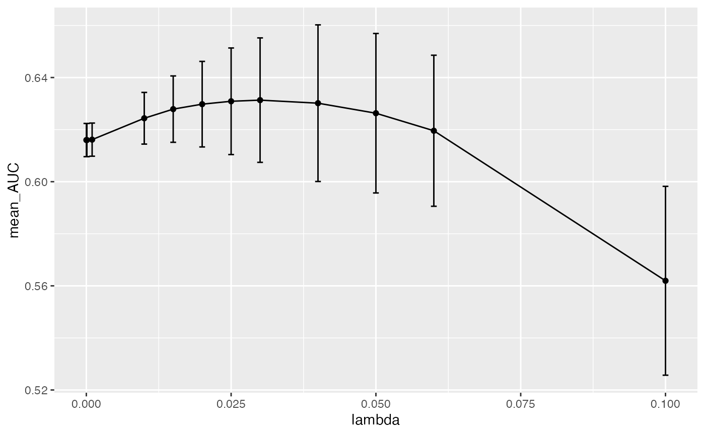

One particularly important aspect of machine learning (ML) is hyperparameter tuning. A hyperparameter is a parameter that is set before the ML training begins. These parameters are tunable and they effect how well the model trains. We must do a grid search for many hyperparameter possibilities and exhaust our search to pick the ideal value for the model and dataset. In this package, we do this during the cross-validation step.
Let’s start with an example ML run. The input data to
run_ml() is a dataframe where each row is a sample or
observation. One column (assumed to be the first) is the outcome of
interest, and all of the other columns are the features. We package
otu_mini_bin as a small example dataset with
mikropml.
# install.packages("devtools")
# devtools::install_github("SchlossLab/mikropml")
library(mikropml)
head(otu_mini_bin)
#> dx Otu00001 Otu00002 Otu00003 Otu00004 Otu00005 Otu00006 Otu00007
#> 1 normal 350 268 213 1 208 230 70
#> 2 normal 568 1320 13 293 671 103 48
#> 3 normal 151 756 802 556 145 271 57
#> 4 normal 299 30 1018 0 25 99 75
#> 5 normal 1409 174 0 3 2 1136 296
#> 6 normal 167 712 213 4 332 534 139
#> Otu00008 Otu00009 Otu00010
#> 1 230 235 64
#> 2 204 119 115
#> 3 176 37 710
#> 4 78 255 197
#> 5 1 537 533
#> 6 251 155 122Before we train and evaluate a ML model, we can preprocess the data.
You can learn more about this in the preprocessing vignette:
vignette("preprocess").
preproc <- preprocess_data(
dataset = otu_mini_bin,
outcome_colname = "dx"
)
#> Using 'dx' as the outcome column.
dat <- preproc$dat_transformedWe’ll use dat for the following examples.
The simplest way to run_ml()
As mentioned above, the minimal input is your dataset
(dataset) and the machine learning model you want to use
(method).
When we run_ml(), by default we do a 100 times repeated,
5-fold cross-validation, where we evaluate the hyperparameters in these
500 total iterations.
Say we want to run L2 regularized logistic regression. We do this with:
results <- run_ml(dat,
"glmnet",
outcome_colname = "dx",
cv_times = 100,
seed = 2019
)
#> Using 'dx' as the outcome column.
#> Training the model...
#> Loading required package: ggplot2
#> Loading required package: lattice
#>
#> Attaching package: 'caret'
#> The following object is masked from 'package:mikropml':
#>
#> compare_models
#> Training complete.You’ll probably get a warning when you run this because the dataset
is very small. If you want to learn more about that, check out the
introductory vignette about training and evaluating a ML model:
vignette("introduction").
By default, run_ml() selects hyperparameters depending
on the dataset and method used.
results$trained_model
#> glmnet
#>
#> 161 samples
#> 10 predictor
#> 2 classes: 'cancer', 'normal'
#>
#> No pre-processing
#> Resampling: Cross-Validated (5 fold, repeated 100 times)
#> Summary of sample sizes: 128, 129, 129, 129, 129, 130, ...
#> Resampling results across tuning parameters:
#>
#> lambda logLoss AUC prAUC Accuracy Kappa F1
#> 1e-04 0.7113272 0.6123301 0.5725828 0.5853927 0.17080523 0.5730989
#> 1e-03 0.7113272 0.6123301 0.5725828 0.5853927 0.17080523 0.5730989
#> 1e-02 0.7112738 0.6123883 0.5726478 0.5854514 0.17092470 0.5731635
#> 1e-01 0.6819806 0.6210744 0.5793961 0.5918756 0.18369829 0.5779616
#> 1e+00 0.6803749 0.6278273 0.5827655 0.5896356 0.17756961 0.5408139
#> 1e+01 0.6909820 0.6271894 0.5814202 0.5218000 0.02920942 0.1875293
#> Sensitivity Specificity Pos_Pred_Value Neg_Pred_Value Precision
#> 0.5789667 0.5920074 0.5796685 0.5977166 0.5796685
#> 0.5789667 0.5920074 0.5796685 0.5977166 0.5796685
#> 0.5789667 0.5921250 0.5797769 0.5977182 0.5797769
#> 0.5805917 0.6032353 0.5880165 0.6026963 0.5880165
#> 0.5057833 0.6715588 0.6005149 0.5887829 0.6005149
#> 0.0607250 0.9678676 0.7265246 0.5171323 0.7265246
#> Recall Detection_Rate Balanced_Accuracy
#> 0.5789667 0.2839655 0.5854870
#> 0.5789667 0.2839655 0.5854870
#> 0.5789667 0.2839636 0.5855458
#> 0.5805917 0.2847195 0.5919135
#> 0.5057833 0.2478291 0.5886711
#> 0.0607250 0.0292613 0.5142963
#>
#> Tuning parameter 'alpha' was held constant at a value of 0
#> AUC was used to select the optimal model using the largest value.
#> The final values used for the model were alpha = 0 and lambda = 1.As you can see, the alpha hyperparameter is set to 0,
which specifies L2 regularization. glmnet gives us the
option to run both L1 and L2 regularization. If we change
alpha to 1, we would run L1-regularized logistic
regression. You can also tune alpha by specifying a variety
of values between 0 and 1. When you use a value that is between 0 and 1,
you are running elastic net. The default hyperparameter
lambda which adjusts the L2 regularization penalty is a
range of values between 10^-4 to 10.
When we look at the 100 repeated cross-validation performance metrics
such as AUC, Accuracy, prAUC for
each tested lambda value, we see that some are not
appropriate for this dataset and some do better than others.
results$trained_model$results
#> alpha lambda logLoss AUC prAUC Accuracy Kappa F1
#> 1 0 1e-04 0.7113272 0.6123301 0.5725828 0.5853927 0.17080523 0.5730989
#> 2 0 1e-03 0.7113272 0.6123301 0.5725828 0.5853927 0.17080523 0.5730989
#> 3 0 1e-02 0.7112738 0.6123883 0.5726478 0.5854514 0.17092470 0.5731635
#> 4 0 1e-01 0.6819806 0.6210744 0.5793961 0.5918756 0.18369829 0.5779616
#> 5 0 1e+00 0.6803749 0.6278273 0.5827655 0.5896356 0.17756961 0.5408139
#> 6 0 1e+01 0.6909820 0.6271894 0.5814202 0.5218000 0.02920942 0.1875293
#> Sensitivity Specificity Pos_Pred_Value Neg_Pred_Value Precision Recall
#> 1 0.5789667 0.5920074 0.5796685 0.5977166 0.5796685 0.5789667
#> 2 0.5789667 0.5920074 0.5796685 0.5977166 0.5796685 0.5789667
#> 3 0.5789667 0.5921250 0.5797769 0.5977182 0.5797769 0.5789667
#> 4 0.5805917 0.6032353 0.5880165 0.6026963 0.5880165 0.5805917
#> 5 0.5057833 0.6715588 0.6005149 0.5887829 0.6005149 0.5057833
#> 6 0.0607250 0.9678676 0.7265246 0.5171323 0.7265246 0.0607250
#> Detection_Rate Balanced_Accuracy logLossSD AUCSD prAUCSD AccuracySD
#> 1 0.2839655 0.5854870 0.085315967 0.09115229 0.07296554 0.07628572
#> 2 0.2839655 0.5854870 0.085315967 0.09115229 0.07296554 0.07628572
#> 3 0.2839636 0.5855458 0.085276565 0.09122242 0.07301412 0.07637123
#> 4 0.2847195 0.5919135 0.048120032 0.09025695 0.07329214 0.07747312
#> 5 0.2478291 0.5886711 0.012189172 0.09111917 0.07505095 0.07771171
#> 6 0.0292613 0.5142963 0.001610008 0.09266875 0.07640896 0.03421597
#> KappaSD F1SD SensitivitySD SpecificitySD Pos_Pred_ValueSD
#> 1 0.15265728 0.09353786 0.13091452 0.11988406 0.08316345
#> 2 0.15265728 0.09353786 0.13091452 0.11988406 0.08316345
#> 3 0.15281903 0.09350099 0.13073501 0.12002481 0.08329024
#> 4 0.15485134 0.09308733 0.12870031 0.12037225 0.08554483
#> 5 0.15563046 0.10525917 0.13381009 0.11639614 0.09957685
#> 6 0.06527242 0.09664720 0.08010494 0.06371495 0.31899811
#> Neg_Pred_ValueSD PrecisionSD RecallSD Detection_RateSD Balanced_AccuracySD
#> 1 0.08384956 0.08316345 0.13091452 0.06394409 0.07640308
#> 2 0.08384956 0.08316345 0.13091452 0.06394409 0.07640308
#> 3 0.08385838 0.08329024 0.13073501 0.06384692 0.07648207
#> 4 0.08427362 0.08554483 0.12870031 0.06272897 0.07748791
#> 5 0.07597766 0.09957685 0.13381009 0.06453637 0.07773039
#> 6 0.02292294 0.31899811 0.08010494 0.03803159 0.03184136Customizing hyperparameters
In this example, we want to change the lambda values to
provide a better range to test in the cross-validation step. We don’t
want to use the defaults but provide our own named list with new
values.
For example:
new_hp <- list(
alpha = 1,
lambda = c(0.00001, 0.0001, 0.001, 0.01, 0.015, 0.02, 0.025, 0.03, 0.04, 0.05, 0.06, 0.1)
)
new_hp
#> $alpha
#> [1] 1
#>
#> $lambda
#> [1] 0.00001 0.00010 0.00100 0.01000 0.01500 0.02000 0.02500 0.03000 0.04000
#> [10] 0.05000 0.06000 0.10000Now let’s run L2 logistic regression with the new lambda
values:
results <- run_ml(dat,
"glmnet",
outcome_colname = "dx",
cv_times = 100,
hyperparameters = new_hp,
seed = 2019
)
#> Using 'dx' as the outcome column.
#> Training the model...
#> Training complete.
results$trained_model
#> glmnet
#>
#> 161 samples
#> 10 predictor
#> 2 classes: 'cancer', 'normal'
#>
#> No pre-processing
#> Resampling: Cross-Validated (5 fold, repeated 100 times)
#> Summary of sample sizes: 128, 129, 129, 129, 129, 130, ...
#> Resampling results across tuning parameters:
#>
#> lambda logLoss AUC prAUC Accuracy Kappa F1
#> 0.00001 0.7215038 0.6112253 0.5720005 0.5842184 0.1684871 0.5726974
#> 0.00010 0.7215038 0.6112253 0.5720005 0.5842184 0.1684871 0.5726974
#> 0.00100 0.7209099 0.6112771 0.5719601 0.5845329 0.1691285 0.5730414
#> 0.01000 0.6984432 0.6156112 0.5758977 0.5830960 0.1665062 0.5759265
#> 0.01500 0.6913332 0.6169396 0.5770496 0.5839720 0.1683912 0.5786347
#> 0.02000 0.6870103 0.6177313 0.5779563 0.5833645 0.1673234 0.5796891
#> 0.02500 0.6846387 0.6169757 0.5769305 0.5831907 0.1669901 0.5792840
#> 0.03000 0.6834369 0.6154763 0.5754118 0.5821394 0.1649081 0.5786336
#> 0.04000 0.6833322 0.6124776 0.5724802 0.5786224 0.1578750 0.5735757
#> 0.05000 0.6850454 0.6069059 0.5668928 0.5732197 0.1468699 0.5624480
#> 0.06000 0.6880861 0.5974311 0.5596714 0.5620224 0.1240112 0.5375824
#> 0.10000 0.6944846 0.5123565 0.3034983 0.5120114 0.0110144 0.3852423
#> Sensitivity Specificity Pos_Pred_Value Neg_Pred_Value Precision
#> 0.5798500 0.5888162 0.5780748 0.5971698 0.5780748
#> 0.5798500 0.5888162 0.5780748 0.5971698 0.5780748
#> 0.5801167 0.5891912 0.5784544 0.5974307 0.5784544
#> 0.5883667 0.5783456 0.5755460 0.5977390 0.5755460
#> 0.5929750 0.5756471 0.5763123 0.5987220 0.5763123
#> 0.5967167 0.5708824 0.5748385 0.5990649 0.5748385
#> 0.5970250 0.5702721 0.5743474 0.5997928 0.5743474
#> 0.5964500 0.5687721 0.5734044 0.5982451 0.5734044
#> 0.5904500 0.5677353 0.5699817 0.5943308 0.5699817
#> 0.5734833 0.5736176 0.5668523 0.5864448 0.5668523
#> 0.5360333 0.5881250 0.5595918 0.5722851 0.5595918
#> 0.1145917 0.8963456 0.5255752 0.5132665 0.5255752
#> Recall Detection_Rate Balanced_Accuracy
#> 0.5798500 0.28441068 0.5843331
#> 0.5798500 0.28441068 0.5843331
#> 0.5801167 0.28453770 0.5846539
#> 0.5883667 0.28860521 0.5833561
#> 0.5929750 0.29084305 0.5843110
#> 0.5967167 0.29264681 0.5837995
#> 0.5970250 0.29278708 0.5836485
#> 0.5964500 0.29248583 0.5826110
#> 0.5904500 0.28951992 0.5790926
#> 0.5734833 0.28119862 0.5735505
#> 0.5360333 0.26270204 0.5620792
#> 0.1145917 0.05585777 0.5054686
#>
#> Tuning parameter 'alpha' was held constant at a value of 1
#> AUC was used to select the optimal model using the largest value.
#> The final values used for the model were alpha = 1 and lambda = 0.02.This time, we cover a larger and different range of
lambda settings in cross-validation.
How do we know which lambda value is the best one? To
answer that, we need to run the ML pipeline on multiple data splits and
look at the mean cross-validation performance of each
lambda across those modeling experiments. We describe how
to run the pipeline with multiple data splits in
vignette("parallel").
Here we train the model with the new lambda range we
defined above. We run it 3 times each with a different seed, which will
result in different splits of the data into training and testing sets.
We can then use plot_hp_performance to see which
lambda gives us the largest mean AUC value across modeling
experiments.
results <- lapply(seq(100, 102), function(seed) {
run_ml(dat, "glmnet", seed = seed, hyperparameters = new_hp)
})
#> Using 'dx' as the outcome column.
#> Training the model...
#> Training complete.
#> Using 'dx' as the outcome column.
#> Training the model...
#> Training complete.
#> Using 'dx' as the outcome column.
#> Training the model...
#> Training complete.
models <- lapply(results, function(x) x$trained_model)
hp_metrics <- combine_hp_performance(models)
plot_hp_performance(hp_metrics$dat, lambda, AUC)
As you can see, we get a mean maxima at 0.03 which is
the best lambda value for this dataset when we run 3 data
splits. The fact that we are seeing this maxima in the middle of our
range and not at the edges, shows that we are providing a large enough
range to exhaust our lambda search as we build the model.
We recommend the user to use this plot to make sure the best
hyperparameter is not on the edges of the provided list. For a better
understanding of the global maxima, it would be better to run more data
splits by using more seeds. We picked 3 seeds to keep the runtime down
for this vignette, but for real-world data we recommend using many more
seeds.
Hyperparameter options
You can see which default hyperparameters would be used for your
dataset with get_hyperparams_list(). Here are a few
examples with built-in datasets we provide:
get_hyperparams_list(otu_mini_bin, "glmnet")
#> $lambda
#> [1] 1e-04 1e-03 1e-02 1e-01 1e+00 1e+01
#>
#> $alpha
#> [1] 0
get_hyperparams_list(otu_mini_bin, "rf")
#> $mtry
#> [1] 2 3 6
get_hyperparams_list(otu_small, "rf")
#> $mtry
#> [1] 4 8 16Here are the hyperparameters that are tuned for each of the modeling methods. The output for all of them is very similar, so we won’t go into those details.
Regression
As mentioned above, glmnet uses the alpha
parameter and lambda hyperparameter. alpha of
0 is for L2 regularization (ridge). alpha of
1 is for L1 regularization (lasso). alpha in
between is elastic net. You can also tune alpha like you
would any other hyperparameter.
Please refer to original glmnet documentation for more
information: https://web.stanford.edu/~hastie/glmnet/glmnet_alpha.html
The default hyperparameters chosen by run_ml() are fixed
for glmnet.
#> $lambda
#> [1] 1e-04 1e-03 1e-02 1e-01 1e+00 1e+01
#>
#> $alpha
#> [1] 0Random forest
When we run rf or parRF, we are using the
the randomForest package implementation. We are tuning the
mtry hyperparameter. This is the number of features that
are randomly collected to be sampled at each tree node. This number
needs to be less than the number of features in the dataset. Please
refer to the original documentation for more information: https://cran.r-project.org/web/packages/randomForest/randomForest.pdf
By default, we take the square root of number of features in the
dataset and we provide a range that is
[sqrt_features / 2, sqrt_features, sqrt_features * 2].
For example if the number of features is 1000:
#> $mtry
#> [1] 16 32 64Similar to the glmnet method, we can provide our own
mtry range.
Decision tree
When we run rpart2, we are running the
rpart package implementation of decision tree. We are
tuning the maxdepth hyperparameter. This is the maximum
depth of any node of the final tree. Please refer to the original
documentation for more information on maxdepth: https://cran.r-project.org/web/packages/rpart/rpart.pdf
By default, we provide a range that is less than the number of features in the dataset.
For example if we have 1000 features:
#> $maxdepth
#> [1] 1 2 4 8 16 30or 10 features:
#> $maxdepth
#> [1] 1 2 4 8SVM with radial basis kernel
When we run the svmRadial method, we are tuning the
C and sigma hyperparameters.
sigma defines how far the influence of a single training
example reaches and C behaves as a regularization
parameter. Please refer to this great sklearn resource for
more information on these hyperparameters: https://scikit-learn.org/stable/auto_examples/svm/plot_rbf_parameters.html
By default, we provide 2 separate range of values for the two hyperparameters.
#> $C
#> [1] 1e-03 1e-02 1e-01 1e+00 1e+01 1e+02
#>
#> $sigma
#> [1] 1e-06 1e-05 1e-04 1e-03 1e-02 1e-01XGBoost
When we run the xgbTree method, we are tuning the
nrounds, gamma, eta
max_depth, colsample_bytree,
min_child_weight and subsample
hyperparameters.
You can read more about these hyperparameters here: https://xgboost.readthedocs.io/en/latest/parameter.html
By default, we set the nrounds, gamma,
colsample_bytree and min_child_weight to fixed
values and we provide a range of values for eta,
max_depth and subsample. All of these can be
changed and optimized by the user by supplying a custom named list of
hyperparameters to run_ml().
#> $nrounds
#> [1] 100
#>
#> $gamma
#> [1] 0
#>
#> $eta
#> [1] 0.001 0.010 0.100 1.000
#>
#> $max_depth
#> [1] 1 2 4 8 16 30
#>
#> $colsample_bytree
#> [1] 0.8
#>
#> $min_child_weight
#> [1] 1
#>
#> $subsample
#> [1] 0.4 0.5 0.6 0.7Other ML methods
While the above ML methods are those that we have tested and set
default hyperparameters for, in theory you may be able use other methods
supported by caret with run_ml(). Take a look at the available
models in caret (or see here
for a list by tag). You will need to give run_ml() your own
custom hyperparameters just like in the examples above: